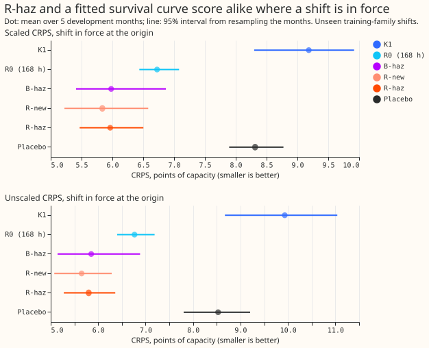
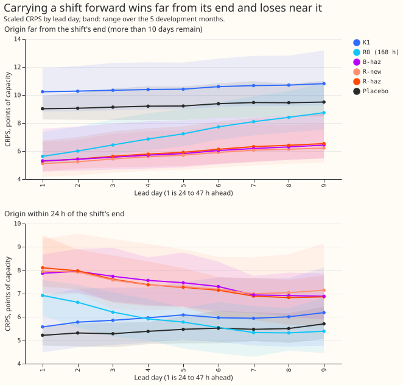
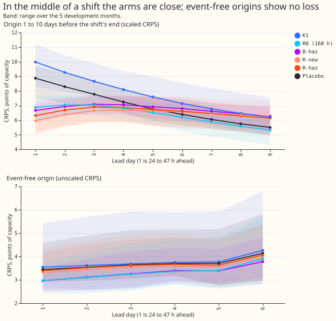
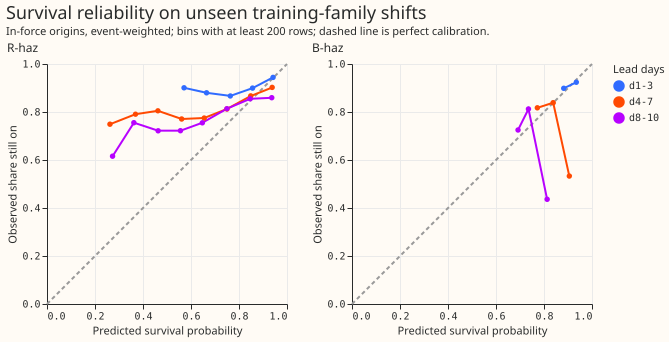
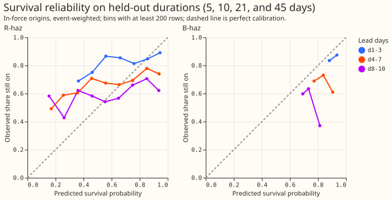
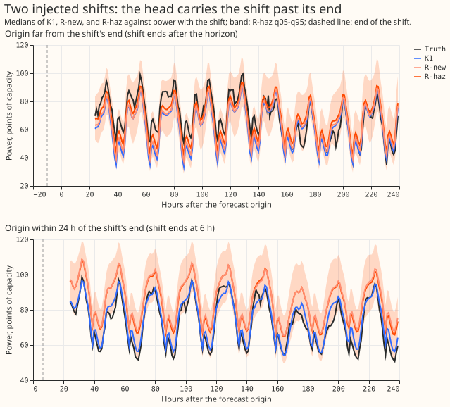

Does a departure head with an explicit survival output beat the best forecast that does not know when a shift ends, once each forecast is scored under its own rules?
A Primary is a primary substation. A load shift is a period when the electricity network operator moves part of one Primary's demand onto, or off, a neighbouring Primary. K1 is the neural network of experiments 612 and 613 that forecasts the normal running arrangement (NRA), the demand with no load shift. Experiment 652 defines two forecasts, scores each under its own rules, and asks whether a departure head with a learned survival output beats a no-fit survival curve. R-haz is the departure head with a survival output. B-haz is K1 shifted by its recent error and decayed by a survival curve fitted to shift durations, with no neural network. R0 (168 h) is the same shift decayed by a fixed exponential. R-new and R-old are the departure heads of experiment 650 with a fixed duration prior. Scaled CRPS means the score after equal width scaling (see Results), and points of capacity are percentages of a Primary's effective capacity. Every shift here is injected into real history; the real rows check only the event-free veto and one verified episode.
Take-home message. Where a shift is in force at the forecast origin, R-haz scores 5.8 points of capacity against K1's 9.9 (unscaled), and B-haz scores 5.85 (unscaled), so on shifts that follow the training mixture the learned survival output adds nothing measurable (R-haz minus B-haz -0.02 [-0.35, +0.24] scaled). On held-out durations R-haz is better by 0.74 points. In the last 24 hours before a shift ends, R-haz scores 3.5 and B-haz 4.6 points worse than K1 (7.44, 8.56, and 3.98 unscaled); that cost cannot be avoided without knowing the end. Verdict: not supported.
Figures






Two forecasts and their scoring rules
The two forecasts answer different questions, so each is scored on its own truth and its own rows.
- The normal-running-arrangement (NRA) forecast ignores shifts. Its target is the demand the Primary would draw with no shift. In the injected bank that truth is known exactly (the unshifted real power). On real rows it is scored only outside detected or labelled shifts. NGED's labels are a one-off, incomplete dump, so the counts of real shifts are lower bounds and clean real rows may hold unlabelled shifts. Scoring the NRA forecast on rows that contain a shift would blame it for riding through the shift, which is its job. The NRA output in this experiment is K1, unchanged.
- The prevailing forecast continues the arrangement now in force. Its target is the observed power, and it is scored on all rows. A prevailing forecast issued during a shift will carry the shift past its end, because shift ends are random and cannot be known at the origin. One hedge is a survival probability that decays the shift over the forecast horizon. A bad score after a shift ends is therefore an expected cost, and the question is whether the forecast is worse than the best forecast with no knowledge of the end time.
Scoring by the state at the forecast origin
The row is assigned to a stratum by the state of the shift at the origin, not at the valid time. The strata, on the injected bank, are:
- Event-free origin: no shift in force at the origin, none ended in the previous 7 days, and none starting before the row's valid time.
- Onset ahead: the shift starts after the origin and before the valid time. No forecast can see an onset, so these rows are reported in their own stratum and kept out of the veto only because the veto is also reported with them in.
- Far from the end: a shift is in force and remains for more than 10 days.
- Middle: a shift is in force and remains for 1 to 10 days.
- Near the end: a shift is in force and remains for at most 24 hours.
- Just ended (context): the origin is within 7 days after the end.
An origin inside an onset ramp counts as in force. A shift whose end was clipped at the 2026-07-01 window edge has a false end, so its rows are excluded from the survival target and from the far, middle, and near strata. The strata use the future end, so they are for scoring only: the equal width scaling uses one factor per arm and month, fitted on all that month's scored rows pooled across strata, so that scaling cannot absorb stratum-specific widening. Unscaled CRPS is reported beside every scaled figure. The dropped rows (no R0 residual history) are tabulated per stratum, and every arm is scored on the rows that all arms share.
Every table and figure reports the loss by lead day, 1 to 9 (leads of 24 to 239 h). Real rows give the event-free veto and a descriptive row for the verified D5 and D16 pair.
Arms
All arms use the same rows, the same equal width scaling, and 2 seeds (the fitted ones). Age is the
age of the departure estimated from the lags (experiment 647's departure_age, from the gap
signals); R-haz reads it as an input, and B-haz uses the same estimate in S(age + 1 + lead / 24) /
S(age + 1). Neither arm sees the true onset.
- K1: the NRA output; context only for the prevailing scoring.
- R0-168: K1's quantiles shifted by K1's recent residual times exp(-lead/168 h). No fit.
- B-haz: the same residual decayed by S(age + 1 + lead / 24) / S(age + 1), where S(d) is the fitted probability that a shift lasts at least d days, the age is in days and the lead in hours, and S is the best single parametric survival curve (exponential, Weibull, log-normal, or log-logistic, chosen by likelihood) fitted to the training shift durations. No neural network. Refitted under each duration mixture.
- R-old and R-new: experiment 650's heads (fixed duration prior) from its five-month fits, reused. R-old is a refit of experiment 647's head, because that experiment's weights are not available.
- R-haz: R-new plus an explicit survival output (a non-negative hazard per lead day, so that survival falls monotonically with lead) trained with a binary cross-entropy against the observed share of shifts still on, added to the pinball loss. Training rows are weighted so that the durations follow the stated mixture. The prevailing quantiles are the NRA quantiles plus the depth times the survival probability, in the mixture form of experiment 647, so the band widens with the uncertainty about whether the shift survives.
- Placebo for R-haz: the same head refitted with each bank training row's target, survival label, in-force label, and weight permuted among the bank rows of the same Primary, so that the target is real but unlinked to the inputs (the in-force flag is a label only, never an input). It keeps the Primary's marginal shift distribution, so it can still move the score; no threshold is set on it. The report gives R-haz minus placebo beside every contrast. A zero-input head is not run.
Results
Scores are the continuous ranked probability score (CRPS, twice the mean pinball loss over the 11 stored quantiles) in points of capacity. A negative difference favours the first arm. Cells are the mean over lead days 1 to 9 (leads of 24 to 239 h; no row has a lead of 240 h) of the event-weighted mean, seeds averaged, then the mean of the 5 development months (2025-10, 2025-12, 2026-01, 2026-03, 2026-06). Intervals are percentile bootstraps over the 5 months. All numbers are on unseen training-family shifts of the scored month (the heads trained on the other 4 months) unless stated. Equal width scaling multiplies each arm's quantile spread about its median by one factor per arm, month, and seed, chosen so that the q05-q95 band covers 0.90 of the month's scored rows pooled across strata.
- Primary contrast: not met. Where a shift is in force (far, middle, and near pooled), scaled CRPS is K1 9.18, R0 (168 h) 6.72, B-haz 5.98, R-new 5.84, R-haz 5.96, and the placebo 8.31. R-haz minus B-haz is -0.02 [-0.35, +0.24], against the pre-registered -0.05. R-haz minus R0 is -0.76 [-1.01, -0.34], minus R-new +0.13 [-0.11, +0.43], minus the placebo -2.35 [-2.90, -1.49], and minus K1 -3.22 [-4.03, -1.97]. Unscaled: K1 9.93, R0 6.77, B-haz 5.85, R-new 5.65, R-haz 5.80, placebo 8.53.
- Carrying a shift forward wins far from the end and loses near it. Scaled CRPS far from the end (more than 10 days remain): K1 10.50, R0 7.24, B-haz 5.86, R-new 5.71, R-haz 5.94. Within 24 hours of the end (unscaled, because the scaling factors pool across strata): K1 3.98, R0 6.03, B-haz 8.56, R-new 7.38, R-haz 7.44, placebo 4.50. R-haz minus K1 near the end is +1.41 [+0.42, +2.40] scaled; R-haz minus B-haz there is -0.06 [-0.71, +0.72], so R-haz is no worse than the no-fit hazard baseline, as the plan required. R0 (168 h) hedges better near the end and loses far from it: R-haz minus R0 is +1.45 [+0.76, +2.25] near and -1.30 [-1.38, -1.22] far. The strata use the future end, so far-end rows are shifts that did last and near-end rows are shifts that ended. The pooled in-force row is the fair summary.
- Middle of a shift and just after the end. Scaled R-haz minus B-haz is -0.19 [-0.50, +0.12] in the middle. Within 7 days after the end (unscaled), K1 3.70, R0 4.92, B-haz 5.25, R-new 4.56, R-haz 4.58.
- The duration mixture matters for the contrast. Under the short-heavy mixture (0.8 short), R-haz minus B-haz is +0.43 [+0.04, +0.80], so R-haz is worse than B-haz there. Under the long-heavy mixture (0.8 long) it is -0.06 [-0.35, +0.16]. R-haz minus R0 is +0.10 [-0.08, +0.40] and -1.13 [-1.49, -0.58]. The sign of the primary contrast does not hold across the mixtures.
- The survival probabilities are not within 0.10 in every cell. Averaged over in-force rows on training-family shifts, R-haz predicts survival 0.88, 0.76, and 0.68 at lead days 1 to 3, 4 to 7, and 8 to 10, against observed shares of 0.92, 0.83, and 0.78. B-haz predicts 0.92, 0.81, and 0.73. On the held-out durations (5, 10, 21, and 45 days) R-haz predicts 0.87, 0.75, and 0.67 against 0.86, 0.71, and 0.61. Individual bins with at least 500 rows differ by up to 0.42 for R-haz (see the reliability figures). R-haz sits further from the observed share than B-haz and the fixed prior of experiment 647 (0.89, 0.80, and 0.74).
- Held-out durations. The same contrasts, scaled and in-force: R-haz minus B-haz -0.74 [-0.96, -0.51], minus R0 -1.46 [-1.89, -0.89], and minus R-new -0.13 [-0.27, -0.01]. The head and the fitted curve are no longer tied there.
- Veto: not cleared. On injected-bank event-free origins, R-haz minus K1 is -0.13 [-0.69, +0.36] unscaled, so the upper bound is above the 0.03 limit and the experiment cannot tell. On real event-free rows it is +0.00 [-0.33, +0.27] (descriptive). Unscaled CRPS on real event-free rows: K1 3.64, R0 3.49, B-haz 3.58, R-new 3.68, R-haz 3.65, placebo 3.72.
- NRA forecast.
K1_nrais K1's own forecast scored against the unshifted base power, which is the NRA truth. Scored against the unshifted base, K1 scores 3.68 where a shift is in force; against the shifted truth it scores 9.93. The 6.3-point gap is the scoring's fault and not the forecast's. On event-free origins K1 scores 3.70 against the unshifted base and R-haz 3.65 against the observed power. - Placebo. Near the end of a shift the placebo scores 4.50 unscaled and K1 3.98, both below R-haz's 7.44, and R-haz minus the placebo there is +1.91 [+1.32, +2.58] scaled; the placebo's lower loss near the end was not explained. The plan's prediction that R-haz beats R0 at every in-force state therefore fails near the end (+1.45). Where a shift is in force, the placebo scores 8.53 unscaled where a shift is in force, 1.4 below K1, so a head unlinked to its inputs still gains by shifting and widening on average. R-haz minus placebo is -2.35 [-2.90, -1.49] scaled, which is the part of the gain attributable to the inputs. No threshold was set on the placebo.
- Tail calibration (unscaled, where a shift is in force). q05-q95 coverage is K1 0.49, R0 0.63, B-haz 0.73, R-new 0.82, R-haz 0.83, placebo 0.73, against 0.90. Pinball loss at q01, q05, q95, and q99: K1 2.19, 3.66, 3.59, and 2.04; R0 1.04, 2.12, 2.10, and 0.99; B-haz 0.81, 1.66, 1.73, and 0.80; R-new 0.53, 1.43, 1.47, and 0.51; R-haz 0.53, 1.45, 1.51, and 0.52. On event-free origins R-haz's coverage is 0.89 and its q99 loss 0.24 (K1 0.87 and 0.29).
- Rows dropped for no R0 history. On training-family shifts, the share of rows kept is 35% for
event-free rows, 83% for middle rows, 86% for near rows, 88% for far rows, and 91% for just-ended
rows (
score/dropped.csv). All arms are scored on the same kept rows.
Arms, data, and method
- Arms. K1 (stored, the NRA output); R0 (168 h); B-haz (K1 plus the same residual times S(age +
1 + lead / 24) / S(age + 1) for the best of an exponential, Weibull, log-normal, or log-logistic
curve fitted to the training durations of the other 4 months; the best curve was log-normal,
log-logistic, or Weibull, depending on month and mixture); R-old and R-new (experiment 650's
five-month fits, reused;
ml-experiments/00650-*); R-haz (the survival head below); and the placebo for R-haz. Reused code: experiment 647's head, inputs, and fit constants, experiment 650's banks, K1 rebuild, and scaling. - R-haz. Experiment 647's mixture head with the survival probability read from 10 non-negative daily hazards (the survival probability falls with lead), a binary cross-entropy against the observed still-on label with weight 0.05, and the departure's age as an input. Rows are weighted so that each shift counts equally and the short-to-long mix is 0.5 (0.8 and 0.2 in the sensitivity runs). The placebo permutes each bank training row's target, label, and weight among the bank rows of the same Primary.
- Rows and cleaning. Development months only; no valid time on or after 2026-07-01 is read (asserted). Shifts whose end was clipped at that date are excluded from the survival label and from the far, middle, and near strata. Power comes from experiment 650's stored clean stack.
- Cadence and compute. One small head per scored month, trained on the other 4 months, 2 seeds,
so no refit cadence applies. The 40 fits took about 6 minutes on the CPU (8 processes); no
graphics processor was used. Fits are in
data/ml-experiments/00652-*/fits. - Reuse. R-old and R-new predictions come from experiment 650's
fits5; K1 rows and banks from experiments 650 and 647.
Checks
- Median minus mean forecast (in-force training-family rows, mean of the 11 quantiles as the mean, points of capacity): K1 -0.95, R-new -0.64, R-haz -0.51. Mean absolute error of the median: K1 14.53, R-new 9.81, R-haz 10.18.
- Triggers fired. The placebo gained 1.4 points against K1 (placebo trigger), the primary contrast missed its bar, and the reliability prediction failed. The leave-one-Primary-out, sister experiment, and later-dependency triggers were not assessed.
- Reviews. A Sonnet agent reviewed the plan (10 findings; all accepted, 9 changed the plan and 1 was wording) and another reviewed the code before the first fit (12 findings; 1 to 6 and 9 fixed, the rest documented): the class of an event clipped at the window edge, a survival curve fitted to clipped durations, the survival loss on rows with no detected departure, the conditioning of B-haz on the origin, the loss normalisation, and per-event weights. A third agent re-derived the headline numbers (see the pull request).
Caveats
- Every shift is injected. The strata that use the shift's future end (far, middle, near) select on the outcome, so equal width scaling fitted across strata cannot absorb stratum-specific widening, but it inflates K1's factor and makes scaled event-free numbers for K1 misleading; unscaled numbers are given where that matters.
- The duration mixture is an assumption (0.5 short, 3 to 14 days; 0.5 long, 28 to 112 days). The only measured durations we have are one verified 15-day pair and one unconfirmed step of about 16 weeks. Both heads learn that prior, and the survival curve of B-haz is fitted to it.
- The intervals use 5 month blocks, so every interval is coarse. The held-out family differs from the training family in a few attributes only.
- NGED's event labels are incomplete, so real event-free rows may hold unlogged shifts, and the real-row veto is optimistic.
- No real-row 14-day example forecast is shown; the example figure uses injected shifts.
- The first-month-pair gate was not run as a separate step.
What to try next
- Train the survival output on shifts whose end depends on observable signals (the gap signals falling back towards zero), because a duration prior alone gives no more than the fitted curve.
- Train the head with a pinball loss weighted towards rows in the last 24 hours before a shift ends, and test a fixed widening rule that is wider in the last day.
- Re-test with a measured duration mixture once NGED supplies one.